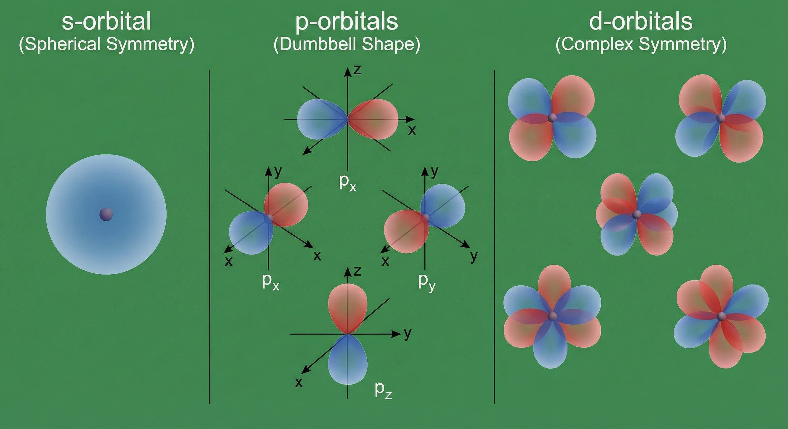
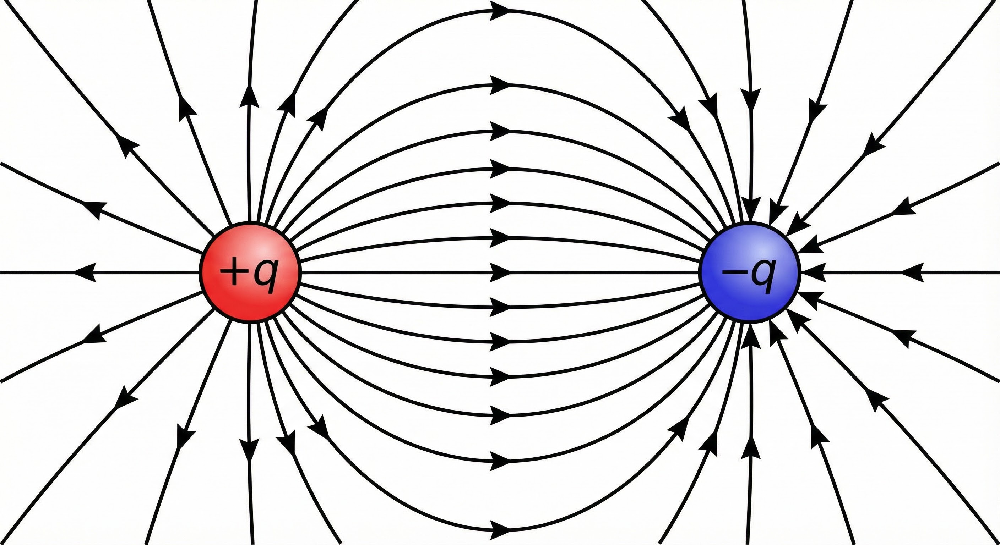
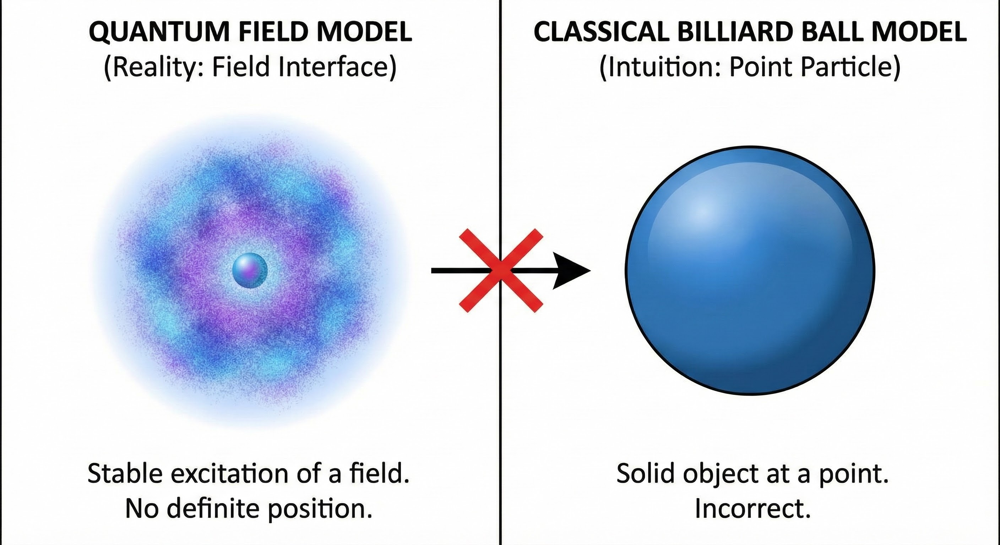
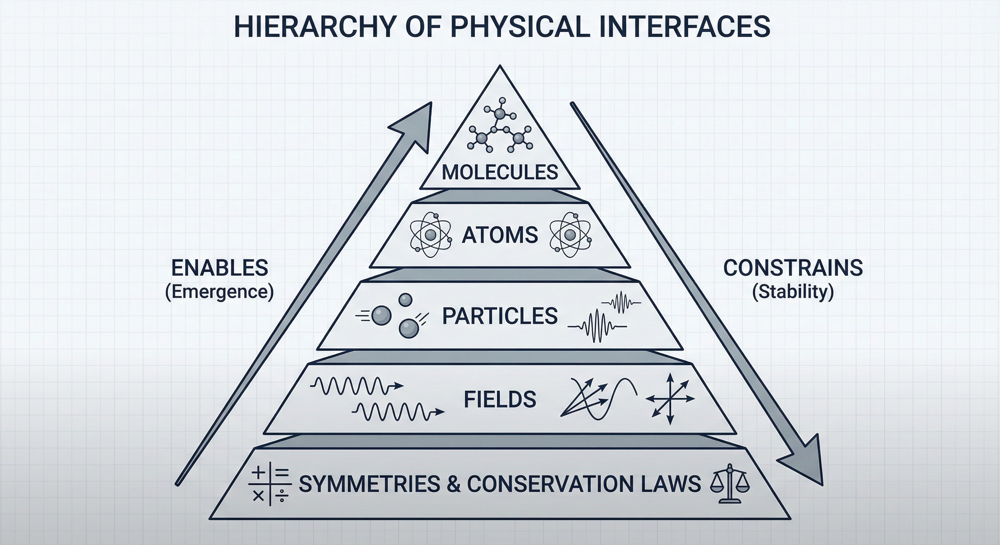

Symmetries: The Source Code
At the very bottom of the physical hierarchy, we do not find stuff; we find symmetries. A symmetry is an interface in the purest sense: it is a constraint that defines what remains invariant when something else changes. Rotational symmetry means the laws of physics remain valid regardless of orientation. Time-translation symmetry means the interface holds regardless of when you look.
"These symmetries are not just mathematical curiosities. They are the fundamental interfaces that shape what is possible."
As shown above, electron orbitals provide a beautiful visual representation of how symmetries manifest in physical reality. The spherical, dumbbell, and more complex orbital shapes are not arbitrary patterns, they directly reflect the underlying symmetries of the electromagnetic field. These orbitals show how quantum mechanics constrains electron behavior, creating stable patterns that enable atoms to exist. The interface here is the constraint itself: electrons can only occupy certain energy levels and spatial configurations, and these constraints create the structure of matter.
Conservation Laws as Boundaries
Every continuous symmetry in nature corresponds to a conservation law. Because the laws of physics are symmetric under time translation, energy is conserved. Because they are symmetric under spatial translation, momentum is conserved. Because they are symmetric under gauge transformations, charge is conserved.

As shown above, conservation laws act as fundamental boundaries in physical systems. Energy conservation acts as a strict interface: processes that would violate it are not just unlikely, they are impossible. This creates a "basin of attraction" where systems can evolve, change, and transform, but must stay within the surface defined by constant energy. The conservation law doesn't tell us exactly what will happen, but it constrains what is possible, creating the interface that shapes all physical processes.
Fields and Particles
The "objects" of physics are not static things, but stable patterns maintained by constraints. The forces are not mysterious actions at a distance, but interfaces that mediate interaction. The fields are not abstract mathematical constructs, but structures that shape possibility space itself.
As shown above, electromagnetic fields illustrate how interfaces shape the space of possibilities. The field lines show the structure of interaction, where forces are strong, where they are weak, and how charged particles will move. This is not just a mathematical description; it is the interface itself, the structure that constrains how particles can interact. The field creates a landscape of possibilities, and particles navigate this landscape according to the constraints it imposes.
An electron is not a tiny ball of matter. It is a stable pattern in a quantum field, maintained by the constraints of the electromagnetic interface. The electron's properties, mass, charge, spin, are not intrinsic qualities of a particle, but responses to different interfaces.
As shown above, the quantum field model reveals particles as stable patterns rather than solid objects. In this view, what we call a "particle" is actually a stable excitation in a field, a pattern that maintains itself through the constraints of the quantum interface. This illustration shows how the field itself is the fundamental reality, and particles emerge as stable patterns within it. The interface constrains which patterns are stable, creating the particles we observe.
Key Concepts
- Symmetries: Fundamental constraints that define what remains invariant
- Conservation Laws: Boundaries created by symmetries (energy, momentum, charge)
- Fields: Structures that shape possibility space
- Particles: Stable patterns in fields, maintained by interfaces
- Quantum Interfaces: Constraints that limit electron orbits and create atomic structure
- Electromagnetic Interface: Mediates interaction between charged particles
The Hierarchy of Physical Interfaces
Physical interfaces form a hierarchy, each building on the ones below. At the most fundamental level, there are the symmetries and conservation laws that create the basic structure of possibility space. These create the interfaces that make fields possible. The fields create the interfaces that make particles possible. The particles create the interfaces that make atoms possible.
As shown above, this hierarchy diagram shows how physical interfaces stack, each layer enabling the next. Stability emerges from the bottom up. An atom is stable because the electromagnetic interface constrains the electrons, and the quantum interface limits their orbits. A crystal is stable because the molecular interfaces constrain the lattice. Each level of the hierarchy creates new possibilities by constraining the levels below, showing how complexity emerges through the accumulation of interfaces rather than their replacement.